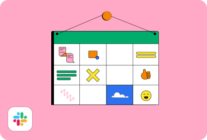

En la búsqueda por destacarse como un empleador de elección, el tiempo libre pagado (PTO, por sus siglas en inglés) se posiciona como una herramienta vital para atraer y retener talento, especialmente en un contexto de trabajo remoto. Actualmente, ofrecer PTO se ha convertido en una práctica casi obligatoria para aquellas empresas que aspiran a incorporar a los mejores profesionales en sus equipos.
Este artículo profundiza en el concepto de PTO, explora sus diversas modalidades, y ofrece pautas para desarrollar una política efectiva de tiempo libre pagado. Descubre cómo implementar esta prestación y por qué es fundamental en el entorno laboral actual.
¿Qué es el PTO y cuáles son los tipos?
Una política de tiempo libre pagado (conocido como PTO en inglés, por las siglas de paid time off) combina diversas causas de ausencia de un empleado en un único banco de días para que el trabajador pueda hacer uso del tiempo libre pagado por el empleador. Así, el empleado es libre de hacer lo que considere con ese grupo de días según como le parezca mejor.
Por lo tanto, hay muchos tipos de tiempo libre pagado. Algunos ejemplos:
- Días de vacaciones
- Recuperación de una enfermedad o frente a una incapacidad laboral temporal
- Licencia por duelo
- Cuidar a un familiar
- Licencia de maternidad o paternidad
- En caso de adopción
- Trámites
- Días de estudio
- Otro tipo de días personales, como día de salud mental (últimamente popular entre generaciones jóvenes)
¿Qué son las vacaciones ilimitadas?
Las vacaciones pagadas e ilimitadas son una medida que las empresas toman para mejorar las condiciones laborales de su talento y con el objetivo de ofrecer una mayor autonomía a los trabajadores para la toma de sus merecidos descansos.
Si bien puede ser un aspecto muy motivador a priori, presenta una serie de desventajas. Como es el caso de las dificultades en la coordinación de las vacaciones ilimitadas, lo que supone todo un desafío para el departamento de Recursos Humanos, como así también la presión por el cumplimiento de objetivos. Otra de las desventajas es que los trabajadores, de una manera contradictoria, se toman menos días libres ya que no están seguros de qué se considera “demasiado” o “qué es adecuado” para la empresa, así mismo, pueden sentirse juzgados por sus compañeros si utilizan la política al máximo.
Por estas razones, la mayoría de las empresas que empiezan ofreciendo vacaciones ilimitadas migran hacia el modelo de PTO flexible.
¿Por qué una empresa debería ofrecer el PTO?
En la actualidad, la mayoría de las culturas empresariales se vuelven employee-centric, lo que significa que el empleador debe ofrecer beneficios atractivos para retener talento, frente a un mercado cada vez más competitivo. Ya que esto es lo que le garantiza un equipo de trabajo estable y autónomo, en lugar de altos índices de rotación.

1. Menos agotamiento
Algunas estadísticas que tienes que conocer sobre el burnout o síndrome del quemado/agotamiento, gracias a investigaciones por Gallup, en tanto razones por las cuales los empleados suelen experimentar agotamiento:
- 63 % más probabilidades de tomar días de enfermedad.
- 50% de probabilidades de discutir cómo abordar las metas de desempeño con su gerente.
- 23 % más de probabilidades de visitar la sala de emergencias.
- 2,6 veces más probable que esté buscando activamente un trabajo diferente.
- 13 % menos confianza en su desempeño.
Ahora bien, el PTO ayuda a que los empleados puedan tomar el tiempo libre que necesitan cuando es necesario, aún más luego del contexto de pandemia y todo el impacto a nivel social y psicológico que significó en las personas.
Por lo tanto, ayuda a que los empleados estén felices en su lugar de trabajo, al mismo tiempo que esta situación permite que puedan tomar descansos pagos, recuperar sus energías y volver a las actividades laborales con un alto compromiso. Una gran manera de estimular la productividad en las horas trabajadas (incluso en las horas extras) junto al bienestar laboral.
2. Diversidad en talento contratado
Al contar con PTO como un beneficio, las empresas pueden contratar personal de distintas partes del globo, sin importar dónde están ubicados geográficamente. Esto, por lo tanto, amplía las oportunidades de tener talento único.
%EF%B9%96width=522&height=293&name=Group%20403923644%20(2).png)
También, permite la construcción de una cultura organizacional basada en la multiculturalidad y el respeto por las diferencias. De hecho, según estudios de Gartner, en una fuerza laboral diversa, el rendimiento mejora en un 12% y la intención de permanecer en un 20%.
3. Cumplimiento por ley
En la mayoría de los países (sobre todo en la Unión Europea), la ley requiere el PTO, no así en el caso de los Estados Unidos. Los empleadores en EE. UU. no están obligados por ley a proporcionar tiempo libre remunerado a sus trabajadores. Sin embargo, la situación es diferente en la práctica.
Ahora bien, las leyes en relación con el PTO varían incluso entre estados y se requiere del cumplimiento de las regulaciones federales y locales para evitar sanciones o multas que puedan perjudicar el normal funcionamiento de las organizaciones.
4. Mejor clima laboral
Un clima laboral positivo es lo que muchas empresas buscan y esto es posible gracias al beneficio que supone el PTO para los empleados (y, desde ya, para las propias empresas). Sin dudas, también servirá para mejorar la relación con los compañeros de trabajo en el ambiente laboral. Además, esto facilita que el capital humano sea honesto sobre el uso del tiempo libre.
5. Mayor ventaja competitiva
En el mercado, hay mucha competencia por talento único. Ya no solo es una cuestión de los departamentos de IT, por ejemplo. Por esta razón, el ofrecimiento de PTO puede hacer la diferencia en lo que respecta al puesto de trabajo, las responsabilidades y la compensación monetaria.
A propósito, descubre Deel Engage para crear una cultura organizacional para tu equipo global. El complemento ideal para mejorar cualquier forma de trabajo, para la organización de tu empresa y tus colaboradores.
6. Marca empleadora mejorada
La marca empleadora es una de las prioridades de los profesionales del área de Recursos Humanos. Trabajar en ella implica construir y representar ideas positivas sobre la empresa respecto al vínculo que mantiene con el personal.
7. Más retención
Una forma de demostrar que la empresa confía en el personal es por medio del PTO. A su vez, esta realidad se refleja en compromiso y mejor clima de trabajo, lo que deriva en una buena retención de talento. La confianza es la clave.
Descarga este pack de recursos para mejorar la experiencia de trabajo de tu equipo global.


¿Cuáles son las desventajas de ofrecer el PTO?
Si optas por el PTO para tus empleados, ya sea porque lo establece la ley y porque quieres ofrecer un plus a tu equipo, hay que saber que esto puede generar algunos malentendidos, sobre todo al principio.
Uso indebido de las políticas
Si la política de PTO no define cuántos días se pueden destinar en caso de enfermedad a diferencia del tiempo de vacaciones, puede ocurrir que:
- Los empleados trabajan enfermos para no descuidar la cantidad de días libres. Y así pueden ahorrar tiempo para sus vacaciones. Esto, a su vez, reduce la productividad que es justamente lo que se busca con este beneficio.
- Los empleados usan toda la cantidad de días que disponen antes de que termine el año y esto evita que puedan usar días en caso de emergencia o necesidad de hacer un trámite.
Para solucionar este posible inconveniente, que es muy usual, la política PTO debe ser clara al respecto. Lo más recomendable es dividir los días libres en categorías, al mismo tiempo que los líderes y gerentes de la organización deben ser quienes asuman esto con responsabilidad, el manejo del tiempo libre personal para transmitir compromiso y ser “un modelo” a seguir.
Muchos días acumulados
Si los empleados no utilizan los días durante el año, es posible que se acumule una importante cantidad de días, lo cual podría suponer un obstáculo al normal funcionamiento de la organización o ser más costoso de lo previsto.
Por eso, algunas empresas establecen límites a la política de PTO en cuanto a la cantidad de días que un trabajo puede transferir al año siguiente o una fecha de vencimiento al remanente.
Diferencias entre la política de PTO de la empresa y las leyes local
¿En tu equipo distribuido tienes empleados de distintas partes del mundo? La adaptación a la política de PTO puede ser algo complicada, en este sentido. Por ejemplo, la cantidad de días puede variar de forma significativa de un país a otro. Entonces, aquí pueden darse diversas situaciones:
- En caso de que ofrezca más días libres pagados de los que exige la ley federal en un país específico, es justo dar derecho a todos los empleados a una mayor cantidad de tiempo libre pagado.
- Si ofrece menos días, se debe garantizar la cantidad de tiempo libre pagado según lo establecido por las leyes de licencia locales, con la finalidad de evitar costosos errores de cumplimiento (multas, sanciones o penas).
- Si sus empleados provienen de diferentes jurisdicciones, es posible que se apliquen diferentes leyes estatales. Y es importante estar al tanto de las mismas para el cumplimiento. Lo más adecuado es hacer una investigación exhaustiva antes de poner en vigencia el programa de PTO.
Aparte de todo esto, puedes fijar condiciones como la antigüedad, el período de pago, si es para trabajadores a tiempo completo, entre otros puntos. Pero siempre corroborando que coincida con lo establecido por ley (no olvides las prestaciones sociales).

Una de las ventajas al contratar una solución como Deel es que, si contrata a través de la plataforma, estas normas obligatorias de licencia paga se integran automáticamente en los contratos de trabajo según sea necesario.
¿Cómo crear una política de PTO?
Aquí te compartimos pautas para poner a punto tu política de PTO por escrito. Si respondes estas preguntas, tendrás buena parte del camino allanado porque habrás cubierto los aspectos esenciales:
Revisa la cantidad de días y a quién lo ofrecerás
- ¿Cuántos días libres pagados tendrán tus empleados en total?
- ¿Ofrecerás tiempo libre pagado solo a freelancers o empleados?
Define la distribución de días, los requerimientos y condiciones
La cantidad promedio de días libres pagados varía en todo el mundo: puede ser de 10 a más de 30 días por año, con diferentes regulaciones con respecto a la acumulación de PTO.
Algunas preguntas clave:
- ¿Tus empleados tendrán una cantidad total de días?
- ¿Dividirás los días en categorías: recuperación de enfermedad, vacaciones, etc.?
- ¿Pueden elegir las vacaciones flotantes?
- ¿Cómo se contarán los feriados locales? Por ejemplo, Navidad. ¿Este día formará parte del PTO o no?
- ¿Tendrán días libres personales?
Toma medidas en relación con las vacaciones
Asegúrate de organizar las vacaciones de tus empleados a lo largo del año para evitar el ausentismo en momentos en los que necesitas a todo el personal o buena parte del equipo. Porque muchos empleados querrán tener días libres durante las vacaciones, por lo que su política de vacaciones debe evitar que su empresa se quede sin trabajadores en momentos críticos y esenciales.
Una política de PTO ilimitado permite a tus colaboradores usar sus días libres con gran flexibilidad, reduce el burnout y mejora la felicidad de tu equipo.


Sobre los días libres acumulados
Piensa en cómo permitirás que tus empleados usen los días libres acumulados. Pueden transferirlos al próximo año o pueden obtener un pago de PTO. No olvides la trampa del remanente: asegúrate de establecer límites a la cantidad de días de PTO que se pueden remanente.
- ¿Cómo manejarás los días acumulados?
- ¿Qué ocurrirá en caso de renuncia o despido con los días acumulados?
- ¿Con cuántos días de anticipación tus empleados deben programar sus vacaciones?
- ¿Cómo deberá llevarse a cabo el procedimiento?
Tecnología para controlar el tiempo libre
Muchas empresas están utilizando software para tareas diarias con la finalidad de automatizarlas. El PTO no es la excepción.
Si no planeas invertir en un software de seguimiento del tiempo, puedes elegir a un empleado (generalmente de recursos humanos o administración) para realizar un seguimiento de las ausencias.
Optimiza la gestión del PTO internacional con Deel
Navega las complejidades del tiempo libre pagado a nivel internacional con Deel, tu solución integral para una administración sin esfuerzos. Deja de lado las tediosas investigaciones y consultas a expertos: Deel lo hace por ti, asegurando plena compatibilidad con las regulaciones de cada región.

Al elegirnos para gestionar tu talento global, garantizamos el cumplimiento de todas las obligaciones legales relacionadas con el PTO, además de facilitar una amplia gama de beneficios adicionales. Con herramientas como nuestro complemento para Slack, podrás implementar un sistema de solicitud de PTO eficiente y transparente, manteniendo a todos en el equipo informados.
Conoce las herramientas que te ayudarán a mejorar la colaboración, cultura y productividad de tu equipo.


Accede gratis a nuestro SIRH con Deel HR aquí y comienza a explorar las posibilidades de tener toda la gestión del talento en una misma plataforma.


.svg)